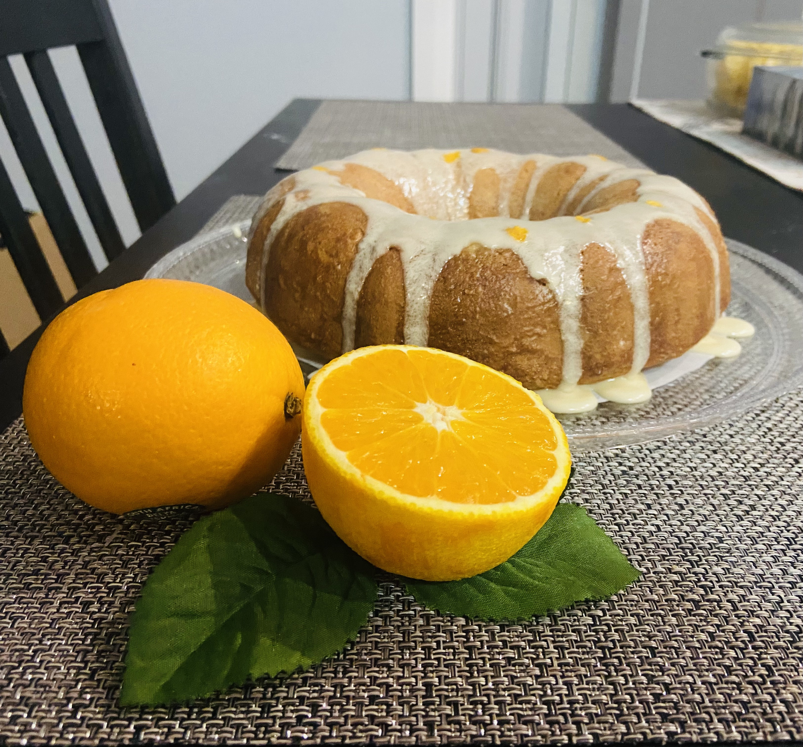

A passionate and motivated individual, I worked for over 6 years in the financial industry as an underwriter.
Basically, my tasks involved reviewing and approving (or declining) loan applications from individuals and companies
looking to finance various assets (cars, boats, lawnmowers, you name it!)
At the same time, I always had a keen interest in computers and video games but never did anything about it
(By the way, my PSN handle is @Sweetest_girl01 add me for some fun playing sessions !)
And then the pandemic hit. I lost a few family members and it prompted me to reevaluate my priorities and what I really wanted to accomplish in my life
What would be my legacy, if I was to depart prematurely ?
In January 2021, I started taking classes in software development, thus starting my journey to becoming a software engineer.
It has been an amazing journey so far and I am continuously growing, thanks to amazing teachers and mentors that I have found along the way.
About Me
What I like:
I currently live in Toronto, Canada and during my free time, I garden or I bake ! check out some of my realizations below:
This is me! 👋🏾 Lemon cake! 😍Some flowers from my tiny garden

Another citrus fruit cake. Theres is a pattern here . . . 🤔
Also,
Mark Twain is one my favorite author. Here is a quote from him that continues to inspire me:
The man with a new idea is a crank until the idea succeeds.
Experience
Where I work:
DEV DEGREE INTERN SHOPIFY (IN COOPERATION WITH DOMINICAN UNIVERSITY OF CALIFORNIA)
- CURRENT
A unique and innovative program that combines formal education at Dominican University of California and hands-on assignments within Shopify development teams.
Where I worked before that:
CREDIT ANALYST (BILINGUAL, FRENCH) MONERIS
to
Perform reviews of regulated and high-risk merchant accounts.
Analyze and adjudicate USD and CAD applications as well as evaluate risks associated with merchants business models.
Acquire and review relevant documentation to assess and mitigate risk, including financial statements, processing statements, personal statement of net worth, business licenses, etc.
Generate credit assessment in accordance with Moneris underwriting guidelines. Conduct periodic re-adjudication of merchants accounts to fit within risk appetite.
Liaise with merchants via phone and email, conduct investigations to understand business models and prevent fraud.
Collaborate with internal partners (Fraud, Compliance, Sales, etc.) over the processing cycle and contribute to projects and initiatives to improve team practices.
TEAM LEAD CREDIT ANALYST (BILINGUAL, FRENCH) YAMAHA FINANCIAL SERVICES
to
Review and analyze financial statements to understand a company's business models.
Analyze new commercial loan applications, negotiate with business partners, gather information, and adjudicate new commercial applications according to internal policies.
Conduct credit reviews of high-risk applicants to ensure proper risk mitigation using diverse risk management tools and techniques
Coordinate and manage a team of junior and senior credit underwriters. Establish efficient workflow processes, monitor daily productivity, coordinate team meetings, ensure adequate levels of training and organize coaching session as needed.
Contribute to the development of credit policies, create periodical reports and analysis for upper-level management. Identify ways to improve underwriting and operations.
Investigate and grant credit on applications received from Inovatec Compass Dealer Portal through the LOS System (Compass) by reviewing customers credit history, debt service and program guidelines.
Cultivate and preserve strong relationships with dealership personnel while maintaining decision turnaround time at or below company objectives.
Work the credit and income queue workflows to ensure processing efficiency and accuracy.
CREDIT ANALYST (BILINGUAL, FRENCH) HYUNDAI CAPITAL CANADA
to
Adjudicate deals received from DealerTrack through the LOS System (Fiserv) by reviewing customers credit history, debt service and are executed within Hyundai Capital guidelines and compliance requirements.
Recommend quality credit decisions within established turnaround times to seniors and manager, gather information to assist in preparing management report and perform other lending duties as needed.
Work the credit and income queue workflows to ensure processing efficiency and accuracy.
Take inbound calls from customers, solicitors and underwriters with inquiries related to mortgage administration
Process servicing requests including prepayments, payment date change, line of credit withdrawals and repayment. Quote prepayment and discharge penalties.
Identify retention opportunities for customers with mortgages coming up for renewals or customers wishing to refinance.
Education
What I've studied:
- CURRENT
APPLIED COMPUTER SCIENCE - (Bachelor's) at Dominican University Of California (U.S)
to CURRENT
SOFTWARE ENGINEERING TECHNOLOGY - Artificial Intelligence (Ontario College Advanced Diploma) at Centennial College (CA)
to
ECONOMICS (Bachelor's) at University Of Moncton (CA)
Skills
What I am good at:
Excellent communication skills (English & French)
Commercial and consumer credit underwriting skills,
Financial statement analysis
Attention to detail, data driven and able to translate findings into valuable insights
Proficient in Microsoft Excel, Word, Power Point, Visio.
Working knowledge of SQL.
Contact me
Want to get in touch ? Here are the places where you will most likely find me: